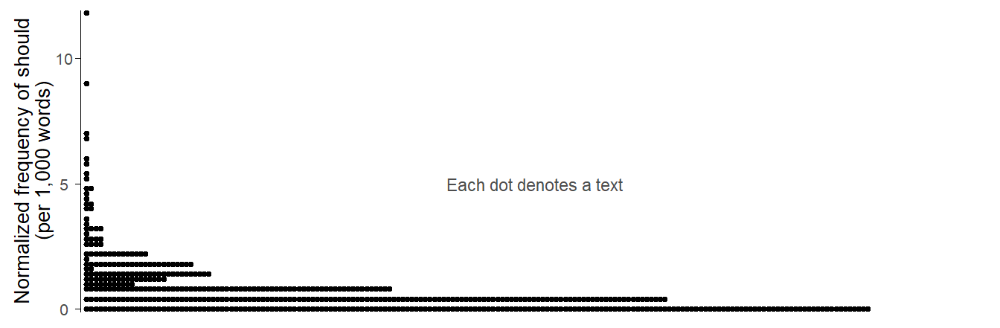
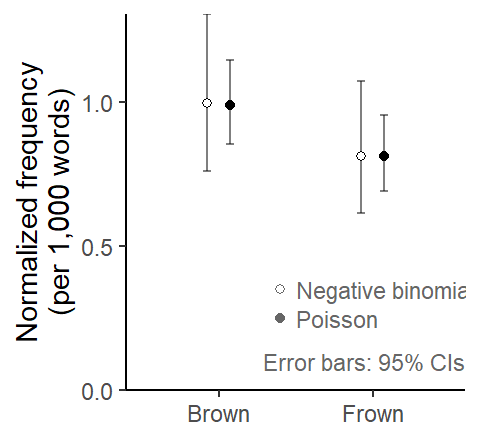

This blog post discusses two features of corpus data that make it more complicated to talk about replicability in corpus linguistics. The first one concerns the issue of non-independence of observations: Tokens extracted from a corpus are almost always clustered by source (author or speaker). The second one concerns the lack of balance in corpus data. In contrast to experiments, where the researcher has (almost) full control over the distribution of data points across the conditions of interest, the spread of corpus hits across the levels of relevant predictors is uneven.
We will consider, as an illustrative set of data, the frequency of modals in recent British and American English. These make for an interesting case study, not only because they have generated an exchange on replicability in the recent literature (Leech 2003; Millar 2009) and they have been used by McEnery and Brezina (2022) to illustrate key ideas about replication. The data on which the following (selective) discussion is based are available from TROLLing (Sönning 2024), which should facilitate follow-up discussions.
The following points are relevant for both text-linguistic and variationist research.
Load R packages
library(tidyverse) # for data wrangling and visualizationlibrary(dataverse) # for downloading data from TROLLinglibrary(marginaleffects) # to compute model-based estimateslibrary(MASS) # to fit a negative binomial regression modellibrary(ggthemes)library(lattice)library(DescTools)library(here)library(kableExtra)library(gtsummary)library(gamlss)source("C:/Users/ba4rh5/Work Folders/My Files/R projects/my_utils_website.R")
The illustrative data used in this blog post is available from TROLLing .
Data
For more information on the dataset, please refer to Sönning (2024). We start by downloading the data from TROLLing:
dat <-get_dataframe_by_name(filename ="modals_freq_form.tsv",dataset ="10.18710/7LNWJX",server ="dataverse.no",.f = read_tsv,original =TRUE )
Clustered data structure and statistical uncertainty intervals
Interest in corpus-based work often centers on the frequency of a structure in language use. This feature is usually expressed as a normalized frequency (or occurrence rate), expressed, say, as ‘per million words’. Since any corpus is a sample of language use from the domain(s) of interest, these normalized frequencies are sample statistics, which in turn often serve as estimates of population parameters.
Data structure
The Brown corpus, for instance, contains a sample of written American English from the early 1960s, which represents a purposefully compiled list of genres and sub-genres. If we look at the frequency of must in the Brown corpus, it is unlikely that our linguistic interest is limited to the 500 texts (or text excerpts) that are found in Brown. Rather, we would consider this as a sample from the population of interest – written American English in the 1960s.
When extrapolating to this underlying language variety, our sample size is 500 (the number of texts in the corpus) rather than 1 million (the number of word tokens in Brown). In the sampling literature, the 500 texts would be considered the primary sampling units, and the roughly 2,000 words per text file in turn constitute the secondary sampling units (if a text file represents an except from a longer text). The 1 million word tokens in Brown are therefore clustered, or structured hierarchically. They a grouped by text file.
Data description
If we take a look at the distribution of should in the Brown Corpus, we should consider its occurrence rate at the level of the individual texts. This means that we first calculate normlaized frequencies at the level of the text files and then look at the distribution of these.
Figure 1 shows the distribution of these text-level occurrence rates using a dot diagram. Each dot in the figure represents a text file. Since there are many texts with a frequency of 0 (n = 174, or 35%), the dot diagram is flipped: The y-axis shows the normalized frequency (expressed as ‘per 1,000 words’) and the dots form horizontal piles. We note that there are very few texts in which should occurs with a frequency greater than 5 per thousand words. Most texts (n = 382, or 76%) show at most 2 instances (i.e. a rate of roughly 2.5 ptw or lower).
Draw Figure
d_modals |>filter( corpus =="Brown", modal =="should") |>mutate(rate_ptw = n_tokens / n_words *1e3) |>ggplot(aes(x = rate_ptw)) +geom_dotplot(method ="histodot", binwidth = .2, stackratio = .9) +theme_dotplot_vertical() +scale_y_continuous(expand =c(.004,0)) +scale_x_continuous(expand =c(0,0), breaks =c(0, 5, 10)) +xlab("Normalized frequency of should\n(per 1,000 words)") +annotate("text", y = .5, x =5, label ="Each dot denotes a text", size =3, col ="grey30") +coord_flip()

Figure 1: Should in the Brown Corpus: Dot diagram showing the distribution of normalized frequencies across the 500 texts in the corpus.
Our analyses will include Genre as a predictor – specifically, the broad text categories “Fiction”, “General prose”, “Learned”, and “Press”. We therefore break down the text-level occurrence rates by Genre. Figure 2 shows that occurernce rates tend to be lower in Fiction, and that the outliers, with exceptionally high rates of should are found in General prose.
Figure 2: Should in the Brown Corpus: Distribution of text-level normalized frequencies by Genre.
Statistical modeling
We can use a statistical model to learn about the uncertainty surrounding our sample-based estimates. This uncertainty is often reported in terms of confidence intervals (or standard errors), which indicate the precision of estimates, based on the model and data. In order to arrive at reliable uncertainty estimates, a suitable model must be used. For instance, it must adequately represent the structure of the data – in our case, the fact that Brown is primarily a sample of 500 texts (rather than 1 million words) from the language variety of interest.
The use of an inadequate model, which does not take into account the clustered nature of the data, will usually suggest a higher level of precision than is warranted – in other words, we will get overconfidence intervals. This will happen if we analyze the current data with a Poisson model. This model does not account for the structure of the data in the sense that it makes no provision for the possibility that the usage rate of should may vary from text to text. Thus, it assumes that the underlying frequency of should is the same for each text, with observable variation in rates being exclusively due to sampling variation. The “underlying frequency” can be thought of as the propensity of the author(s) to use should in the particular context of language use represented by the text. This means that the model does not allow for the possibility that there my be inter-speaker variation and variation depending on the context of language use (such as the genre).
We will compare two modeling approaches, which are also discussed and contrasted in Sönning and Krug (2022), in the context of a similar research task (the frequency of actually in conversational British speech, as represented in the Spoken BNC2014).
Let’s fit a Poisson model to these data using the base R function glm(), where the code chunk offset(log(n_words)) represents the offset, which adjusts for the fact that text files differ (slightly) in length (for some background on this, see this blog post).
m_poi <-glm( n_tokens ~ genre +offset(log(n_words)), data = should_Brown, family =poisson())
We also fit a negative binomial model to the data, which makes allowances for variation in occurrence rates across the 500 texts in the corpus. It does so via something similar to a standard deviation parameter, which expresses text-to-text variation in the normalized frequency of should. This blog post provides some background on the negative binomial distribution.
We fit a negative binomial regression model using the function glm.nb() in the {MASS} package (Venables and Ripley 2002):
m_nb <- MASS::glm.nb( n_tokens ~ genre +offset(log(n_words)), data = should_Brown)
Model-based predictions (i.e. estimates)
The next step is to calculate model-based estimates of the frequency of should. To this end, we use the predictions() function in the very helpful {marginaleffects} package (Arel-Bundock, Greifer, and Heiss 2024). As explained in some more detail in this blog post, we use the datagrid() function to define the condition for which we wish to obtain estimates. In our case, these are the four genres. We also specify n_words = 1000 in datagrid(), to obtain rates per 1,000 words.
Figure 3 compares these model-based estimates graphically. We observe that the point estimates are virtually identical, but the negative binomial model returns much wider error intervals.
Figure 3: Estimated normalized frequency of should by Genre: Comparison of estimates based on a Poisson and a negative binomial model.
Relevance for replicability
In general, a statistical result is considered as having been replicated if a close replication, i.e. an exact repetition of a study using new data yields statistical conclusions that are consistent with those of the original study. Uncertainty intervals serve as a basis for judging whether the statistical results based on different sets of data are consistent or not. In fact, a 95% confidence interval raises expectations about likely values of replication estimates, i.e. estimates from a replication study. While the degree of consistency can also be evaluated statistically, it is useful to know that a 95% CI has a 83% probability of capturing the replication estimate (see Calin-Jageman & Cumming 2016: 116-117). This gives us some intuition about where replication estimates are likely to fall and guard against the erroneous expectation that the replication estimate should lie within the limits of a 95% CI.
The problem with overconfident error intervals, then, is that they produce unreasonable expectations about what should happen in a replication study. Put differently, a replication estimate may appear to be inconsistent with the original result even though it isn’t. Had the original analysis used a more adequate model, the uncertainty bounds as well as the replication expectations would have been wider.
We can illustrate this issue using our data on the modals. We may consider the Frown Corpus a direct replication of the Brown Corpus, in the sense that is was was compiled using the same sampling design. Of course, the purpose of Frown, which records written American English in the early 1990s, was the documentation of diachronic trends in this variety. The goal was therefore to create a corpus that is a close to Brown as possible, apart from the difference in time. What this means is that Frown estimates that are consistent with those from the 1960s will be interpreted as indicating no change over time, while statistical differences will be interpreted as reflecting a diachronic change in this variety.
To illustrate, we fit two regression models, a Poisson and a negative binomial model, to a subset of the modals data, which includes all texts in the genre Learned from Brown and Frown. These model will have the same structure and include the variable Corpus as a predictor.
We fit these models in the same way as above:
m_poi_learned <-glm( n_tokens ~ corpus +offset(log(n_words)), data = should_learned, family =poisson())m_nb_learned <-glm.nb( n_tokens ~ corpus +offset(log(n_words)), data = should_learned)
Then we use the {marginaleffects} package to generate predictions.
Figure 4 compares these model-based estimates visually. The question of interest is whether the frequency estimate from Frown is consistent with the one from Brown. Due the wider uncertainty intervals, the estimates based on the negative binomial model appear more consistent with one another then those from the Poisson model. In other words, a Poisson analysis of these data might lead us to believ that there is a diachronic decrease in the frequency of should.
Draw Figure
comparison_learned <-rbind( preds_poi_learned[,c(7,2,5,6)], preds_nb_learned[,c(7,2,5,6)])comparison_learned$model <-rep(c("Poisson", "Negative binomial"), each =2)comparison_learned |>ggplot(aes(x=corpus, y=estimate, group=model, shape=model)) +scale_y_continuous(limits=c(0,NA), expand=c(0,0), breaks =c(0, .5, 1)) +ylab("Normalized frequency\n(per 1,000 words)") +xlab(NULL) +scale_color_colorblind() +scale_shape_manual(values=c(21, 19)) +geom_errorbar(aes(ymin=conf.low, ymax=conf.high), width=.1, alpha=.5,position =position_dodge(.3)) +geom_point(position =position_dodge(.3), fill="white") +theme_classic_ls() +theme(plot.subtitle =element_text(face ="italic")) +annotate("text", x =2.6, y = .1, label ="Error bars: 95% CIs", adj=1, color ="grey40", size =3) +annotate("text", x =1.5, y =c(.35, .25), label =c("Negative binomial", "Poisson"), adj=0, color ="grey40", size =3) +annotate("point", x =1.4, y =c(.35, .25), shape =c(21, 19), color ="grey40", size =1.5) +theme(legend.position ="none")

Figure 4: Estimated frequency of should in the genre Learned: Comparison of estimates based on a Poisson and a negative binomial model.
Both models also produce an estimate of the difference between the occurrence rates in the two corpora. This difference is represented by the coefficient for the predictor Corpus, which is very similar in th etwo models:
coef(m_poi_learned)[2]
corpusFrown
-0.1978386
coef(m_nb_learned)[2]
corpusFrown
-0.2054762
Since count regression models operate on the link scale of natural logarithms, these coefficients express differences on the log scale. If we back-transform them using exponentiation, we obtain ratios. This means that the difference between the two corpora is expressed in relative terms. The normalized frequency of should in Frown is only 80% as large as that in Frown.
round(exp(coef(m_poi_learned)[2]), 2)
corpusFrown
0.82
round(exp(coef(m_nb_learned)[2]), 2)
corpusFrown
0.81
We can obtain 95% CIs for these rate ratios using the function confint(). It returns the limits of a 95% CI on the log scale, which means we need to back-transform it to obtain rate ratios:
We note that the statistical uncertainty surrounding the estimate based on the negative binomial model is considerably wider, meaning that the 1990 rate of should could be as small as 55% or as large as 120% of the 1960s rate. The Poisson model, in contrast, suggests that there is stronger indication of a decline in occurrence rate, which could amount to 66% or 102% of the rate in Brown.
We note that the Poisson model is much more consistent with the interpretation of change over time.
Imbalance across predictor levels and data summaries
Leech (2003, 228) looked at the frequency of different modals in the Brown family corpora. For should in Brown, he reports a raw frequency of 910 instances, which is consistent with the current output of CQPweb. Compared against the total number of words in Brown (1,148,454 words), this corresponds to a normalized frequency of 0.79 per thousand words (ptw). This occurrence rate is obtained in the following way: We divide the number of times should occurs in Brown by the total number of word tokens in the corpus, and then multiply by our preferred N, to express the rate as ‘per N words’.
This kind of frequency estimate, which is widespread in corpus linguistics, is referred to as the corpus frequency of an item or structure. Egbert and Burch (2023) contrasts this with a different type of estimate, the mean text frequency, which is found by first calculating normalized frequencies at the text level, and then averaging over these. Since the 500 texts in Brown are all around 2,000 words long, the mean text frequency almost coincides with the corpus frequency:
Since the word count is roughly balanced across texts, we need not worry about unbalanced distributions when forming frequency estimates. This blog post discusses situations where corpus units (texts or speakers) differ in size, and how this can affect frequency estimates.
The Brown Corpus shows a different form of imbalance, however: The size of the four broad genres (Fiction, General Prose, Learned, Press) differs. The following table lists the word count, the number of should tokens, and the derived normalized (subcorpus) frequency of should for each genre. We note that the genre General prose accounts for 41% of the corpus size, while Learned and Press are relatively underrepresented.
This means that both the corpus frequency and the mean text frequency of should in Brown are pulled into the direction of its normalized frequency in General prose. To avoid this, we could instead weight all genres equally and simply average over the four rates listed in the table above. For Brown, this gives us the following frequency estimate:
mean(c(0.480, 0.885, 0.999, 0.876))
[1] 0.81
We will refer to this as the simple average over genres. “Simple” just means unweighted. The corpus frequency (or mean text frequency) reported above is instead weighted by the representation of each genre in the corpus. We could recover this rate by calculating a weighted average, with the weights depending on genre size:
For should in Brown, the simple average and the weighted average are very similar, indicating the the imbalance of word counts across genres does not affect the frequency estimate much.
Let’s also look at should in Frown, starting with a tabular overview. The genres show the same representation in Frown, but the normalized frequencies of should differ from those in Brown.
Based on the information listed in the table, we can determine the simple average and the weighted average:
round(mean(c(0.463, 0.684, 0.811, 0.903)), 2)
[1] 0.72
round(weighted.mean(c(0.463, 0.684, 0.811, 0.903), w =c(.26, .41, .16, .17)),2)
[1] 0.68
In Frown, the discrepancy between these frequency estimates is greater. This is because the genres Learned and Press, which show relatively large occurrence rates of should, gain weight when calculating a simple (instead of a weighted) average.
Model-based predictions: Simple vs. weighted averages
When calculating model-based predictions, we can decide whether we want to form simple or weighted averages. The default behavior in the {marginaleffects} package is to use the in-sample distribution of predictor variables to calculate average predictions. This is to say that, unless explicitly tols to do otherwise, the functions in the package will average predictions over the cases in the estimation sample.
Let’s take a look at how to produce simple and weighted averages using a negative binomial model of should in Frown. The first step is to fit the model:
m_nb_Frown <- MASS::glm.nb( n_tokens ~ genre +offset(log(n_words)), data = should_Frown)
The function avg_predictions() calculates average predictions. Its default behavior for the data at hand returns a frequency estimate that is unlikely to be of interest to us. This is because it uses the in-sample mean text length (n_words) to adjust the predicted rate. The estimate of 1.58 is therefore the expected frequency ‘per 2309 words’:
avg_predictions( m_nb_Frown)
Estimate Std. Error z Pr(>|z|) S 2.5 % 97.5 %
1.58 0.0899 17.6 <0.001 227.7 1.4 1.76
Type: response
At the very least, we should take control over the kind of normalized frequency we are getting. We prefer ‘per 1,000 words’ and therefore use the argument variables to specify n_words = 1000. Now we get a more interpretable estimate:
We note that this is close to the weighted mean we calculated above, which means that the genres are weighted in proportion to their size. This reflects the fact that the {marginaleffects} package by default averages over the estimation sample, and therefore propagates imbalances into the averages. Specifically, the function avg_predictions() starts by calculating a model-based prediction for each text in the data, assuming it is 1,000 words long (as specified by variables = list(n_words = 1000))), and then averages over these 500 model-bases estimates.
If we instead prefer a simple average, we can use the argument newdata to explicitly define the conditions to average over. This way we tell the function not to take the estimation sample as a basis for calculating predictions and weighting, but instead define the reference grid over which to average. The following code asks for a simple average over four conditions, which represent different genres but have the same length:
Estimate Std. Error z Pr(>|z|) S 2.5 % 97.5 %
-0.256 0.141 -1.81 0.0698 3.8 -0.533 0.0207
Term: corpus
Type: response
Comparison: Frown - Brown
References
Arel-Bundock, Vincent, Noah Greifer, and Andrew Heiss. 2024. “How to Interpret Statistical Models Using marginaleffects for R and Python.”Journal of Statistical Software 111 (9): 1–32. https://doi.org/10.18637/jss.v111.i09.
Egbert, Jesse, and Brent Burch. 2023. “Which Words Matter Most? Operationalizing Lexical Prevalence for Rank-Ordered Word Lists.”Applied Linguistics 44 (1): 103–26. https://doi.org/10.1093/applin/amac030.
Leech, Geoffrey. 2003. “Modality on the Move: The English Modal Auxiliaries 1961-1992.” In Modality in Contemporary English, 223–40. DE GRUYTER. https://doi.org/10.1515/9783110895339.223.
McEnery, Tony, and Vaclav Brezina. 2022. Fundamental Principles of Corpus Linguistics. Cambridge University Press. https://doi.org/10.1017/9781107110625.
Millar, Neil. 2009. “Modal Verbs in TIME: Frequency Changes 1923–2006.”International Journal of Corpus Linguistics 14 (2): 191–220. https://doi.org/10.1075/ijcl.14.2.03mil.
Sönning, Lukas. 2024. “Background data for: Some obstacles to replication in corpus linguistics.” DataverseNO. https://doi.org/10.18710/7LNWJX.
Sönning, Lukas, and Manfred Krug. 2022. “Comparing Study Designs and down-Sampling Strategies in Corpus Analysis: The Importance of Speaker Metadata in the BNCs of 1994 and 2014.” In Data and Methods in Corpus Linguistics, 127–60. Cambridge University Press. https://doi.org/10.1017/9781108589314.006.
@online{sönning2023,
author = {Sönning, Lukas},
title = {Some Obstacles to Replication in Corpus Linguistics},
date = {2023-11-08},
url = {https://lsoenning.github.io/posts/2023-11-08-modals_replication/},
langid = {en}
}
![]()